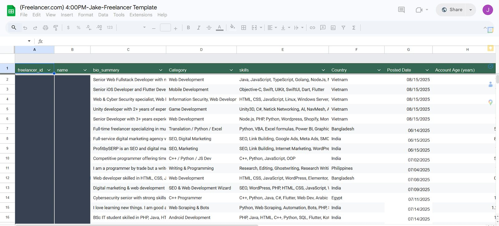
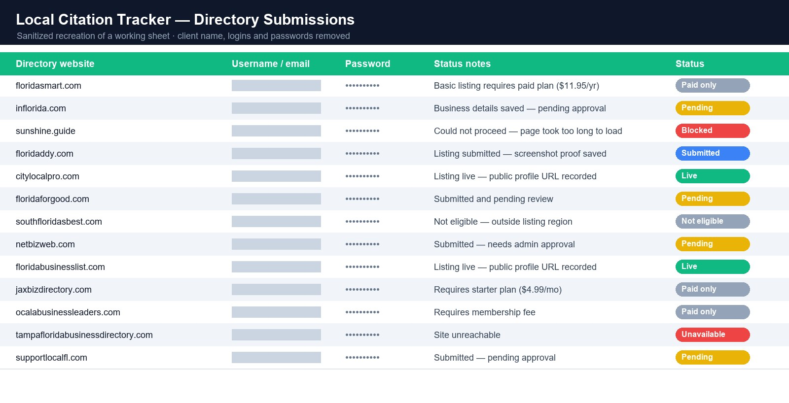
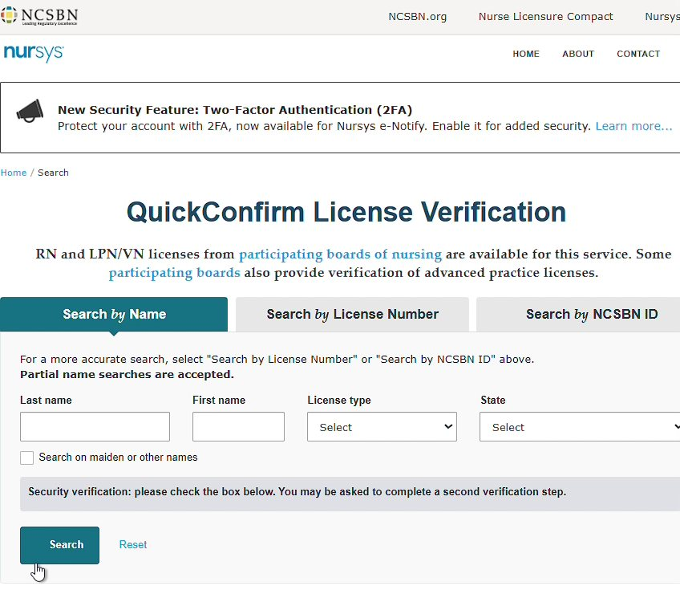
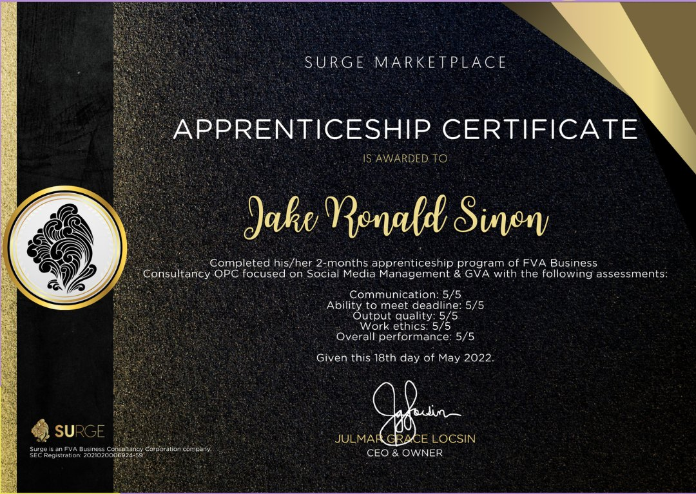

5 work samples
E-commerce
Etsy Product Listing
New Etsy listings built from supplier products, from sourcing and tracking to titles, variations and attributes.
Jake Ronald Sinon · Portfolio
Data Entry E‑commerce Administrative Support
I help businesses stay organized and keep daily work moving through accurate data entry, Shopify & Etsy product listing, administrative support, web research, and customer support. BSIT graduate with 6+ years of remote and BPO experience.
Latest · June 2025 – January 2026
8 roles since 2020
BSIT graduate from Saint Columban College, working remotely with international clients since 2020.
Let's discuss how I can support your business.
Selected Work
Case studies built from actual work files. Client and customer details are removed or redacted.
New Etsy listings built from supplier products, from sourcing and tracking to titles, variations and attributes.
Working inside Shopify's product catalog and the Chrono24 dealer portal for a luxury watch seller.
Researched lead lists of local businesses by niche and city, with contact details and status notes.

3 work samplesExtracting profile and business data from online platforms into clean, filterable spreadsheets.

2 work samplesDirectory and Web 2.0 profile submissions with a detailed log of each listing's status.

2 work samplesReviewing healthcare job applications and verifying professional licenses through official registries.
Branded post content and Facebook engagement tracking for an outsourcing team serving international clients.
No projects in this category yet.
Career
Professional experience across virtual assistance, e-commerce, administrative support, customer service, and research.
June 2025 – January 2026
Latest ExperienceFreelance · Remote
Supported professional application processes through documentation, verification, and submission management for healthcare candidates (RN, MSN, NP, MD and other medical roles).
Key Responsibilities
September 2024 – October 2025
Freelance · Remote
Listed and optimized products daily, keeping product details accurate and search-friendly.
June 2024 – August 2024
Freelance · Remote · Facebook Engagement
Managed Facebook engagement and post scheduling to support visibility and audience interaction.
January 2024 – May 2024
Remote
Conducted outbound calls about Medicare plans while following compliance guidelines.
February 2023 – December 2023
OP360 · Hybrid: Chat & Voice Support
Provided live chat and voice support for customer billing, account, and service concerns.
January 2022 – June 2022
Infostream Solutions
SEO support through backlink checking, citation building, and directory submissions.
June 2021 – December 2021
Momentum Apex LTD
Listed and optimized Shopify products with SEO-focused titles and descriptions.
April 2020 – January 2021
Vastaffer · Freelance
Data entry and administrative support for remote clients.
Services
Practical remote support. Where I have real work samples, you can open them directly.
Day-to-day remote support: email and schedule management, file and form handling, and research tasks.
Accurate data entry, spreadsheet management, and records updates.
Application processing, document handling, and credential verification.
Product listings with SEO titles, descriptions and tags across e-commerce platforms.
Product uploads, pricing, SKUs, variants, and catalog upkeep in the Shopify admin.
Complete listings built from supplier products: titles, tags, variations, and attributes.
Internet research and structured data collection from online sources.
Researched lead lists of businesses by niche and location, with verified details.
Live chat and voice support for billing, account, and service concerns.
Facebook engagement, post scheduling, and engagement tracking.
Simple n8n workflows to automate repetitive tasks.
Skills & Tools
Grouped by the type of work I do, based on my resume and real work samples.
About
I am a dedicated General Virtual Assistant with a Bachelor of Science in Information Technology (BSIT) from Saint Columban College. I help international businesses stay organized, productive, and scalable through reliable remote support.
My experience covers customer service, data entry, lead generation, Shopify & Etsy product listing, and administrative application processing. I bring a detail-oriented approach and clear communication to every task.
With a background in Information Technology, I keep exploring automation, AI-assisted workflows, and process improvements that help businesses work more efficiently.
Always learning new tools, systems & lines of business
To become a trusted and highly adaptable Virtual Assistant recognized for continuous learning, professional growth, and the ability to quickly master new tools, technologies, and lines of business while delivering exceptional value to clients worldwide.
To deliver reliable, high-quality support and professional services while continuously learning, adapting, and improving. I commit to embracing new challenges, undergoing training when needed, and developing skills to meet evolving client needs.
Credentials
Saint Columban College
Foundation in information technology, systems, and digital tools for professional remote work.
Surge Marketplace · FVA Business Consultancy
20.45 training hours covering GVA tasks, social media, SEO and backlinking, lead generation, basic Facebook ads, and email marketing.

Surge Marketplace · FVA Business Consultancy OPC
2-month program. Rated 5/5 in communication, meeting deadlines, output quality, work ethics, and overall performance.
Contact
Let's discuss how I can support your business, whether it's data entry, product listing, research, or day-to-day admin work.